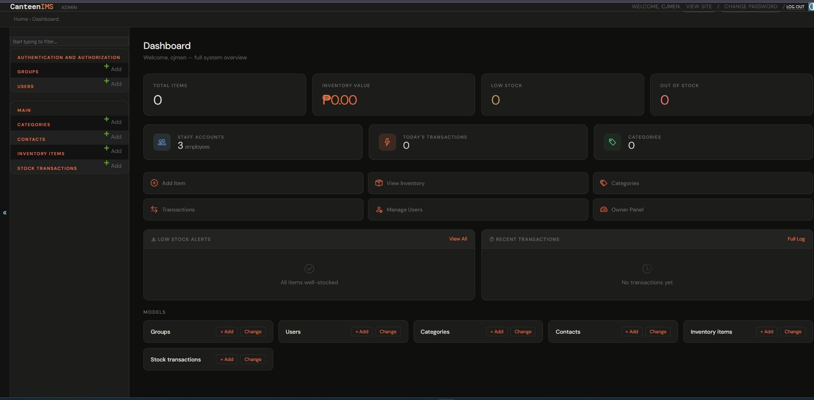
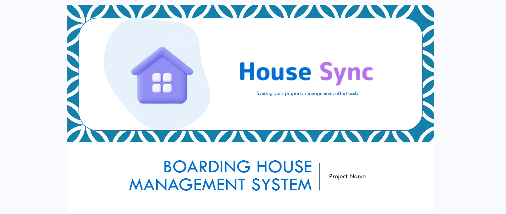
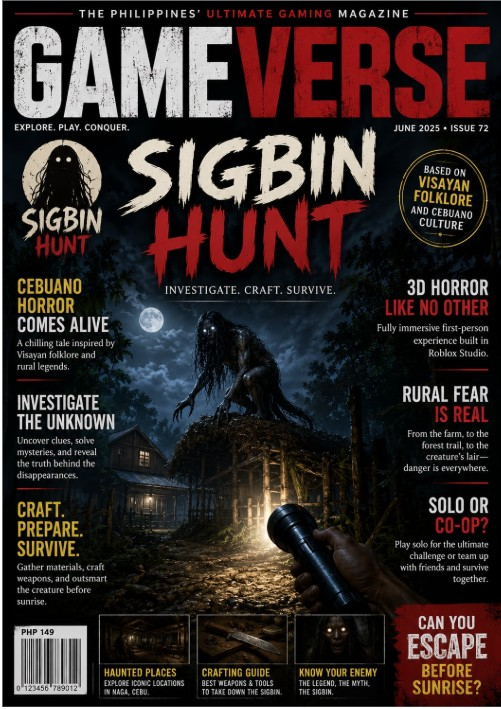

What I can do now
- Structure pages with HTML5 and style them with CSS3
- Build basic responsive layouts with media queries
- Create navigation bars and dropdown menus
- Write basic JavaScript
I'm a student learning web development. I build responsive pages that work on both a phone and a computer, and I'm drawn to public-service websites that make everyday tasks easier for people.
Right now I'm building responsive pages
I'm BJ, a 21-year-old student from Cebu City. I'm building my web development skills through class projects, starting with the front end and working toward full-stack.
My biggest project so far is a (Canteen IMS) is a Managing canteen inventory manually is a common challenge in many educational institutions and food service establishments. Boarding House Management System (BHMS) is a digital platform designed to streamline the management of boarding houses and Sigbin Hunt is a 3D first-person horror investigation game in which the player is dispatched to investigate a string of missing livestock and unexplained disappearances in a rural barangay in Naga, Cebu.
Click any picture to view it larger.

Screenshot placeholderManaging canteen inventory manually is a common challenge in many educational institutions and food service establishments. In most small canteen operations, stock tracking is done through handwritten records or simple spreadsheets, making it prone to human error, data inconsistency, and time-consuming reconciliation. The lack of a centralized and automated system results in inefficient stock monitoring, undetected shortages, and difficulty in maintaining accurate transaction logs.

Screenshot placeholderBoarding House Management System (BHMS) is a digital platform designed to streamline the management of boarding houses. The system will provide an intuitive and efficient interface for landlords, tenants, and administrators to manage room availability, tenant information, payments, and maintenance requests. The system will be available as both a desktop and mobile UI to ensure accessibility for different users.

Screenshot placeholderSigbin Hunt is a 3D first-person horror investigation game in which the player is dispatched to investigate a string of missing livestock and unexplained disappearances in a rural barangay in Naga, Cebu. As the investigation unfolds across a farm, a forest trail, and finally the creature's lair, the player uncovers proof that a Sigbin a creature from Visayan folklore is responsible, and must gather materials, craft a weapon capable of harming it, corner and kill it, then escape the barangay before sunrise. The concept is inspired by a desire to build a horror game rooted in local Cebuano and Visayan culture, using the Sigbin's own folklore traits it’s a version to salt and garlic, its elusiveness as the foundation for the game's investigation, crafting, and confrontation mechanics, presented through a fully 3D, first-person perspective built in Roblox Studio for an immersive, accessible horror experience.
I'm open to learning opportunities, collaboration, and feedback on my work. The best way to reach me is by email.